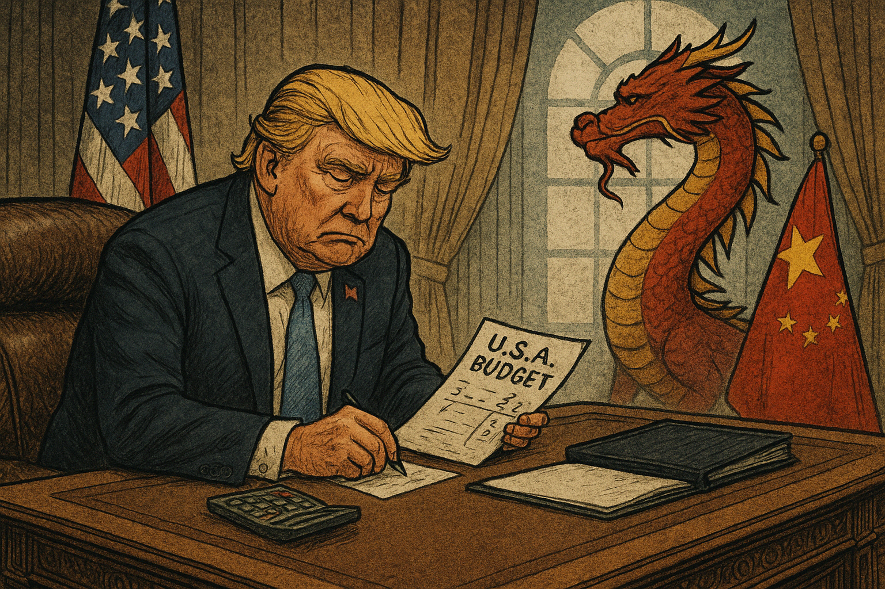

Crónica: O Filho Aprova, o Pai Lucra – A Promiscuidade como Norma
Em Portugal, os escândalos políticos já não causam espanto. Vivemos num estado de anestesia cívica em que o incrível passou a ser rotina, e o inadmissível é tratado com normalidade burocrática. A mais recente mostra desse teatro da promiscuidade institucional envolve Pedro Nuno Santos, dirigente do Partido Socialista e ex-ministro das Infraestruturas.
Veio a público que a empresa do seu pai celebrou contratos com o Estado durante o período em que Pedro Nuno Santos exercia funções governativas. Contratos esses que passaram por áreas sob sua tutela ou influência direta. Ora, a Lei n.º 52/2019, de 31 de julho, que estabelece o regime de incompatibilidades e impedimentos dos titulares de cargos políticos e altos cargos públicos, é clara:
Mas como tantas outras leis em Portugal, parece servir mais para embelezar discursos do que para guiar práticas.
O argumento do costume não tardou: "Está tudo dentro da legalidade". Essa é a nova forma de fugir à responsabilidade política e à ética pública. Como se cumprir a letra da lei, com interpretações criativas e despachos técnicos, bastasse para sossegar consciências.
Mas não basta. Quando um governante permite que empresas da família beneficiem de decisões públicas, está a cruzar uma linha vermelha. Mesmo que tecnicamente legal, é politicamente imoral. E é isso que mina a confiança dos cidadãos, que se cansaram de ver sempre os mesmos nomes, as mesmas famílias, os mesmos esquemas, a mandarem no país como se fosse um patrimônio privado.
Pedro Nuno Santos não é um caso isolado. É apenas mais um capítulo de uma novela longa, onde os protagonistas mudam de rosto, mas o enredo é sempre o mesmo: os que mandam vivem num mundo de impunidade e opacidade, enquanto o cidadão comum paga a conta e vê a república ser desfigurada a cada novo escândalo.
Portugal precisa urgentemente de uma reforma política e moral. Não basta mudar leis: é preciso mudar mentalidades, quebrar redes de influência, e restaurar a ideia de que o serviço público não é um trampolim para o lucro privado.
A família é importante, sim. Mas a República tem de vir primeiro. Sempre.
O artigo foi atualizado com as referências explícitas aos artigos 5.º e 8.º da Lei n.º 52/2019, reforçando o fundamento legal que torna o caso de Pedro Nuno Santos eticamente reprovável e juridicamente questionável.
Imagem cortesia de OpenAI (c)